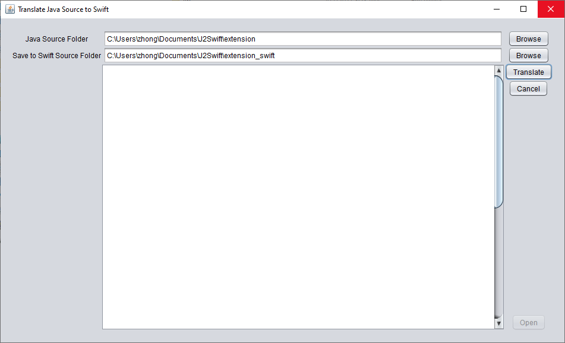

Translate Java Source Codes to Swift
Description: user can not expect the complete translation from Java program
to swift. The translator only translates the variable declarations and function declarations.
It can not translate APIs and libraries.
Download Executable: java2swift.zip
How to use: download the zip file, unzip it, double click the Java2Swift.jar file inside
